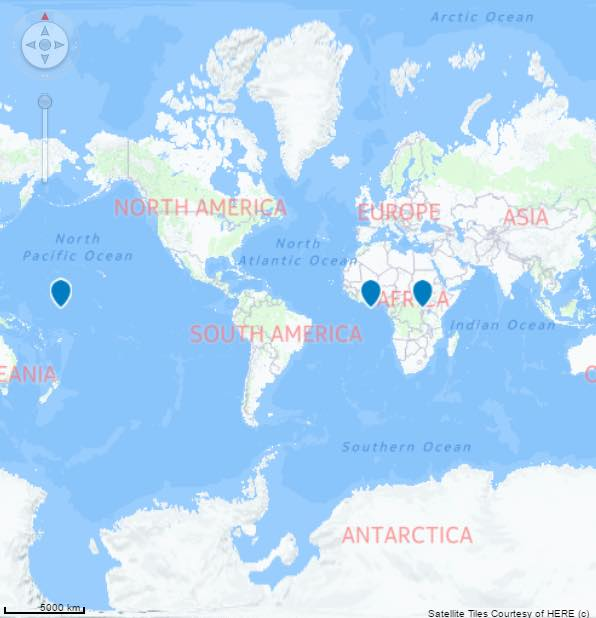
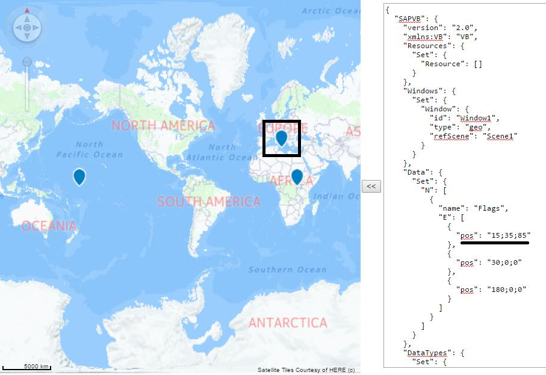

Visual Business UI5: VBI Snippix
The aim:
To test snippix.
To test:
- Click on the arrow on the left side of the textarea and check that a map control is created with 3 spots.
You may need to zoom to see the third spot

- Change the data in the textarea and click the same button. Check that the output is as expected. An example is shown bellow:

To view more information about the visual objects you can click on the VO and refer to the textarea below the map control.